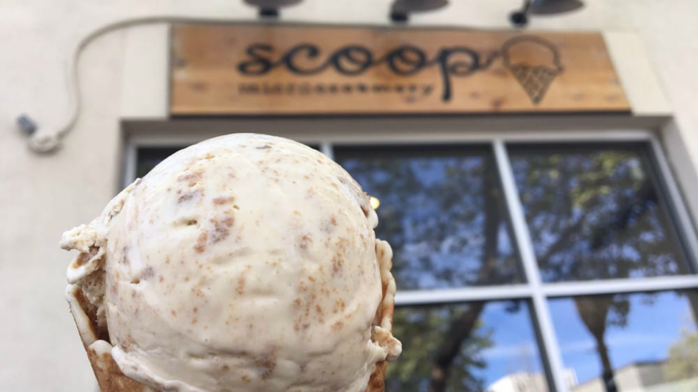
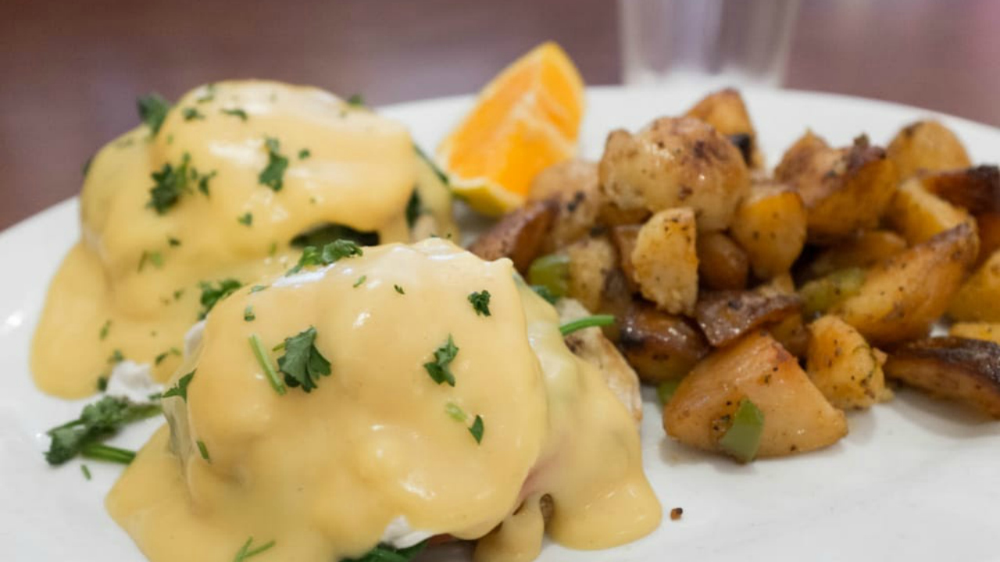

| East Bay | North Bay |
| San Francisco/Peninsula | South Bay |
1 / 3

Scoop Microcreamery
2 / 3

Monster Pho
3 / 3

Sams
| East Bay | North Bay |
| San Francisco/Peninsula | South Bay |
Yogurt Park ( Berkeley )
Fentons Creamery ( Oakland )
Monster Pho ( Oakland ) // Monster Pho 2 ( Emeryville )
Mr. Green Bubble ( Oakland , Union City , Walnut Creek )
Snow White Coffee ( Oakland )
Chalogy ( Walnut Creek )
Kitchen Door ( Napa )
Napa Valley Coffee Roasting Co ( Napa , St. Helena )
Peace Love & Boba ( Vacaville )
Ad Hoc & Addendum ( Yountville )
Nini’s Coffee Shop ( Burlingame )
Boba Dude ( Half Moon Bay )
Aqua Club Dessert & Beverage ( San Bruno )
Brenda’s French Soul Food ( San Francisco )
Crabsters ( San Francisco )
Eatwell Farm’s Ice Box ( San Francisco )
Popson’s Burgers ( San Francisco )
Sams ( San Francisco )
Unicorn Pan Asian Cuisine ( San Francisco )
Antoine’s Cookie Shop ( San Mateo )
Poki Run ( Fremont , Los Altos )
Andale Mexican Restaurant ( Los Gatos )
Los Gatos Meats Smokehouse ( Los Gatos )
I Gatti Restaurant ( Los Gatos )
Main Street Burgers ( Los Gatos , Willow Glen )
T-Birds Pizza ( Los Gatos )
Mil’s Diner ( Milpitas )
Taqueria Las Vegas ( Milpitas )
Tea Annie ( Mountain View )
Queen House ( Mountain View )
Ryowa Ramen House ( Mountain View )
Nola ( Palo Alto )
Scoop Microcreamery ( Palo Alto )
Sprout Cafe ( Palo Alto )
Pho 54 ( San Jose )